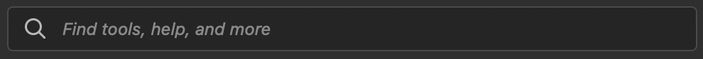
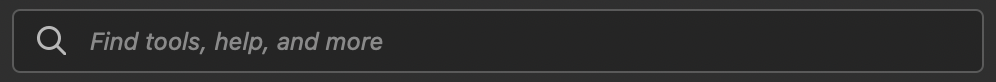
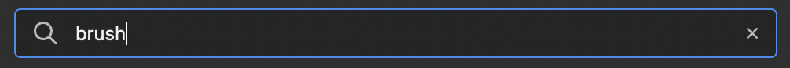
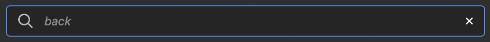
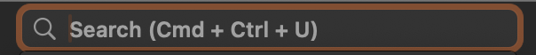
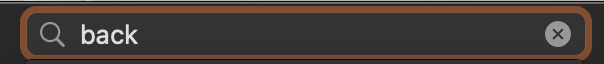
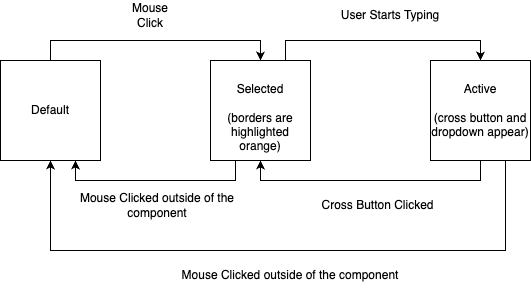
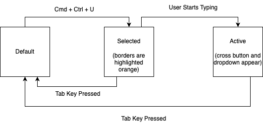
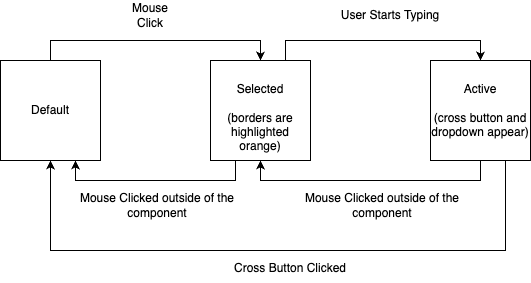
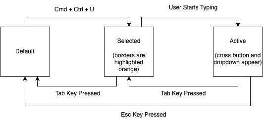

This study aims at analyzing existing search box components in three commonly used applications: Chrome, PhotoShop and PowerPoint. It includes screenshots of different states of the search box components, analyzes its inputs and outputs (including for mouse/trackpad users, keyboard users, touch screen users and possibly for screen reader users), presents state diagrams of the search box component in PowerPoint and their revised versions and shares a reflection on the study.
0. Images
Images of existing search box components in Chrome, PhotoShop and PowerPoint
Chrome
Initial State:

Initial State On Hovering:
Initial State When Clicked:
Initial State On Hovering Over The Bookmark Button:
State When The Bookmark Button is Clicked:
State When User Is Entering Text:
Normal State After User Entered Text:
State On Hovering After User Entered Text:
PhotoShop
Initial State:

State On Hovering:

Focus State:
State When User Is Entering Text:

State When The Cross Button Is Hovered

PowerPoint
Initial State:
Focus State:

State When User Is Entering Text:

1. Inputs
Analyzing the inputs for the search box component in Chrome, PhotoShop and PowerPoint
| Chrome | PhotoShop | PowerPoint | |
|---|---|---|---|
| Mouse/Touchpad |
|
|
|
| Keyboard |
|
|
|
| Touch (if available) |
|
N/A |
|
Chrome: Default state is focused and ready to enter text when web browser is opened. Use keyboard to enter text into the search box.
PhotoShop: Default state is focused and ready to enter text when the search box page is opened. Use keyboard to enter text into the search box.
PowerPoint: Default state is not focused. Use keyboard to enter text into the search box.
The dragging and dropping for copy-and-paste functionality in Chrome is memorable, learnable and efficient because it eliminates the need for right clicks and it is more direct to memorize and easier to learn.
The Command+Ctrl+U for entering the search box in PowerPoint is learnable, memorable and efficient because this operation is encoded in the search box’s default text and it eliminates the need for moving the cursor. Using up key for returning to the search box is memorable, learnable and efficient because it is visual and intuitive, giving an impression that the search box is of the same hierarchy as all of the buttons and areas below it.
For search boxes, Chrome works the best in terms of accessibility and PhotoShop and PowerPoint are similar to each other but less accessible than Chrome.
2. Outputs
Analyzing the outputs for the search box component in Chrome, PhotoShop and PowerPoint
| Chrome | PhotoShop | PowerPoint | |
|---|---|---|---|
| Mouse/Touchpad |
|
|
|
| Keyboard |
|
|
|
| Touch (if available) |
|
N/A |
|
| Screen reader |
|
|
|
I think the logical focus order for a search box is as follows:
- Before the user starts typing, pressing the tab moves the focus to other buttons below it.
- After the user starts typing, pressing the tab button moves the focus to a cross button.
- When the focus is already on the cross button, pressing the tab further moves cursor down the options in the dropdown.
3. State Models
Creating state models for the search box component in PowerPoint and making an intentional tradeoff by making the component less usable for mouse users but more usable for keyboard users
Original State Diagram For Mouse Users:

Original State Diagram For Keyboard Users:

Revised State Diagram For Mouse Users:

Revised State Diagram For Keyboard Users:

- In the revised state diagrams, the mouse/trackpad users and the keyboard users will need to perform the same action twice, once to go from the active state to the selected state and once to move from the selected state to the original state. The mouse/trackpad users need to click somewhere outside of the search box, and the keyboard users need to press the tab key.
- When the user wants to go directly from the active state to the original state, the mouse/trackpad users need to click on the cross button while teh keyboard users need to press the Esc key.
- By making the users perform the same action to move from active to selected and selected to original state, the revised state diagrams improve the learnability and memorability of the search boxes. And by adding the possibility for switching from the active state to the selected state, which was originally not available for keyboard users, the revised state diagram sacrificed efficiency for memorability and learnability.
4. Component Redesign
Redesigning the search box component for better user experience
Redesigned Component:

5. Reflection
Reflecting on the existing search box component and my redesigned component
- The search box for Chrome does well in usability by providing a list of search history when in active state and I incorporated it in my redesign of the PowerPoint search box.
- The PowerPoint search box does well in accessibility by allowing user to go from active state to original state with a Tab and I kept it in the redesign.
- When the user switches to the “Selected” state of the search box, the users will want to see the top N most recently searched keywords to refresh their memory in addition to suggestions when they start typing.
- The current design of PowerPoint search box does not help refresh the user’s memory while they will likely need it and my redesign provides this functionality.
- In PowerPoint, the screen reader tells the user they can press Ctrl-Option-Space to select an item in the dropdown, which benefits the users with visual impairment because it is difficult for them to click on an item using a mouse.
- However, for the keyboard shortcut Cmd-Ctrl-U to focus on the search box in PowerPoint, it might not be possible for people without two hands because the keys are far from each other.
- In this way it makes the design less accessible, and it will negatively impact people with impairments in their hands.
- I think keyboard and screen reader users are most prioritized and this will lead to a more diversified and user-friendly experience of using keyboard shortcuts.
- This choice will also make the component more accessible for people who cannot use the mouse.